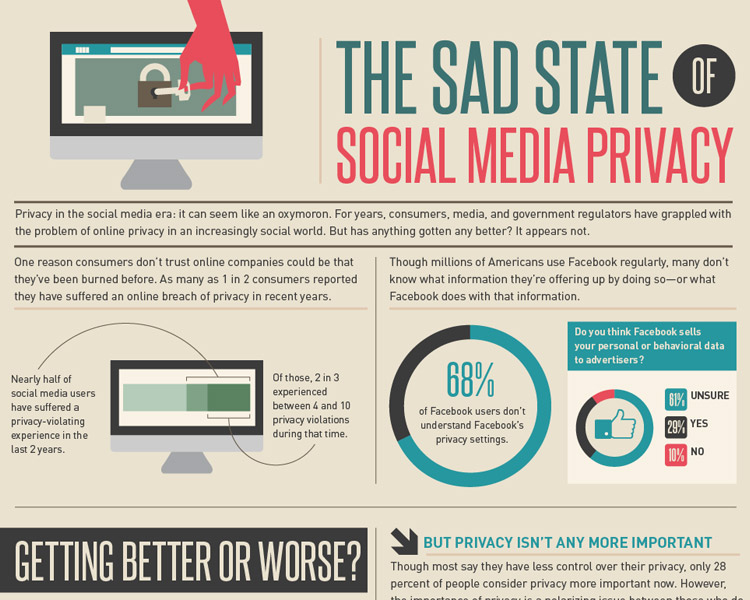

Privacy Resources-Social Media
Ah, social media. Social media is a very popular and common form of communicating nowadays. You are able to share photos or messages with friends, and keep up to date with what your friends are doing. This allows us to communicate with people from all over the world. This is one of the cool features of computers and phones. However these types of websites and apps have several big issues with them. Below are some tips to help approach these issues.
- The first and most important tip: Remember that social media such as Facebook or Twitter are designed to make money. These are companies that need money to keep these systems and apps running. So, they need ways of making money. Many social media services (but not all) resort to selling information to advertisements to make money. So, make sure to check your social media provider to see if they have any settings to turn off "personalized advertisements". This will reduce the amount of information they collect, but not all of it. The best solution to this, like with many issues, is to just not use it. Alternatively, you can try using a different social media service (even if they are less popular, maybe convince some friends to try it out) such as Diaspora, Friendica, or GNU Social.
- Assuming that you decided to continue using mainstream social media, I do have some suggestions for protecting against other people. First off all, double check the security settings of your account. Many social media systems nowadays, including Twitter and Facebook support 2FA (two factor authentication). This is a fancy system designed that whenever someone tries to sign into your account, they need another random, constantly changing pin to access your account in addition to password, usually sent as a text or email. There are also apps that allow for storing 2FA pins in one place. This also helps protect against password leaks on sites, since even if your password was released in a hack of a website, a hacker would still need the 2FA device/account to access the account they wanted. Thus, your information is safe from others who may try to access your account. Here is how to enable it in Snapchat, Facebook, Twitter, and Instagram.
- Many mainstream social media sites include options to control who can view what posts. Luckily, Snapchat is pretty good about this normally. Other sites require a bit more editing. Facebook, Twitter and Instagram all offer ways to lock an account to followers/friends who you approve. Sites such as Facebook may not backsecure posts though, so make sure to check that those posts also have the new privacy setting, and feel free to visit your page not signed in to see what information someone might see if they are not added.
- Although many people have probably been told this already, remember to only communicate with people you know and to avoid oversharing information. This may seem like yet another source to give you random information, but you would be surprised what some people are able to gather about you based on your social media posts. Here are two articles from Forbes and The Huffington Post on just how dangerous it can be. You might be surprised at what people can find out.
